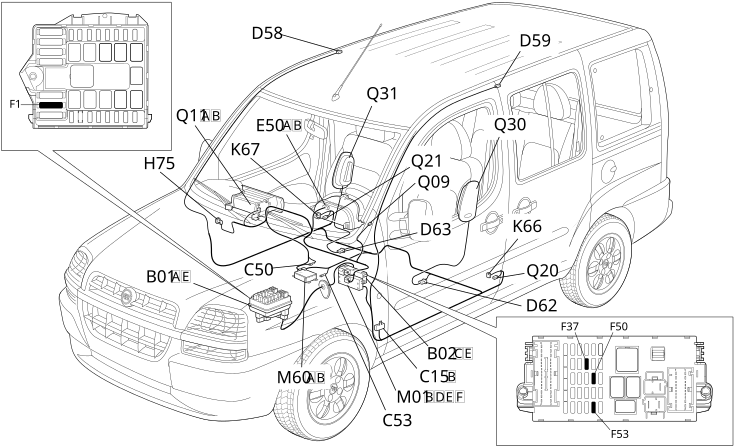

E7030 AIRBAG - LOCATION OF COMPONENTS
- Path
- Electrical equipment > 1 ELECTRICAL FUNCTIONS > E70 VEHICLE ELECTRONIC SYSTEMS > E7030 AIRBAG > E7030 AIRBAG - LOCATION OF COMPONENTS
- Kind
- topic
- Applies to
- engines: 1.2 8v, 1.6 16v, 1.3 JTD 16V, 1.9 JTD 8V, 1.9 DIESEL; all production periods
- Interactive page
- https://sloeber94.github.io/elrnDB-fDbl/en/#/223003407
Applies to: engines: 1.2 8v, 1.6 16v, 1.3 JTD 16V, 1.9 JTD 8V, 1.9 DIESEL; all production periods
Location of components

COMPONENTS
Component code | Name | Assembly reference |
|---|---|---|
Engine compartment junction unit | - | |
Engine compartment junction unit | ||
Engine compartment junction unit | ||
Junction unit under dashboard | ||
Facia earth, driver's side | - | |
Air Bag earth | - | |
Side Bag + Head Bag earth | - | |
Right Head Bag coupling | - | |
Left Head Bag coupling | - | |
Driver's Side Bag/rear coupling | - | |
Driver's Side Bag/rear coupling | ||
Rear passenger Side- Bag coupling/ | - | |
Rear passenger Side- Bag coupling/ | ||
Seat bridges/rear coupling | - | |
Instrument panel | - | |
Instrument panel | ||
Passenger's Air Bag disablement switch | ||
Sensor for driver's, Side Bag | ||
Passenger , Side Bag sensor | ||
Body computer | ||
Air Bag control unit | ||
Driver's Air Bag | ||
Q10 | Clock spring on steering wheel | |
Air Bag in dashboard (passenger side) | ||
Driver's seat belt pre-tensioner | ||
Front passenger seat belt pre-tensioner | - | |
Driver's Side Bag | ||
Passenger Side Bag | ||
Driver's Head Bag | - | |
Passenger Head Bag | - |
Topics linked from this page (30)
- 1004B POWER UNIT ASSEMBLY
- 5505A multi-function components
- 5560B analogue control panel
- 5580C air bag system
- 7045A front seat assembly
- 7065A FRONT SEAT BELTS
- B001 JUNCTION UNIT
- B002 JUNCTION UNIT UNDER DASHBOARD
- C015 DASHBOARD EARTH, DRIVER'S SIDE
- C50 AIR BAG EARTH ( FACIA )
- C053 SIDE BAG + HEAD BAG EARTH
- D69 SEAT BRIDGES/REAR COUPLING
- D58 PASSENGER HEAD BAG COUPLING
- D59 DRIVER'S HEAD BAG COUPLING
- D62 SIDE BAG COUPLING
- D63 DRIVER'S SIDE BAG COUPLING
- E050 INSTRUMENT PANEL
- H075 PASSENGER AIR BAG DISABLING SWITCH
- K66 SENSOR FOR DRIVER'S, SIDE BAG ( REAR )
- K067 SENSOR FOR PASSENGER SIDE BAG
- M001 BODY COMPUTER
- M060 AIR BAG CONTROL UNIT
- Q011 AIR BAG IN DASHBOARD (PASSENGER SIDE)
- Q20 DRIVER'S SEAT BELT PRE-TENSIONER ( REAR )
- Q21 FRONT PASSENGER SEAT BELT PRE-TENSIONER ( REAR )
- Q30 DRIVER'S SIDE BAG ( SIDE BAG )
- Q31 PASSENGER SIDE BAG ( SIDE BAG )
- Q40 DRIVER'S HEAD BAG
- Q41 PASSENGER SIDE HEAD BAG
- Q009 DRIVER'S AIR BAG